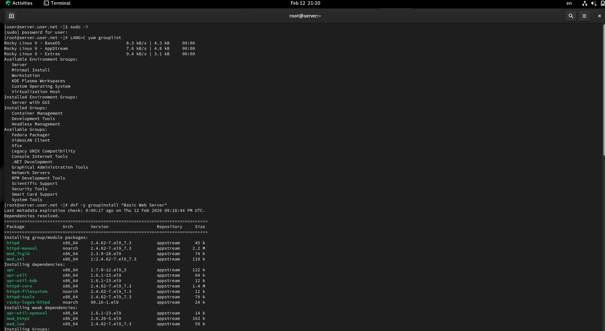
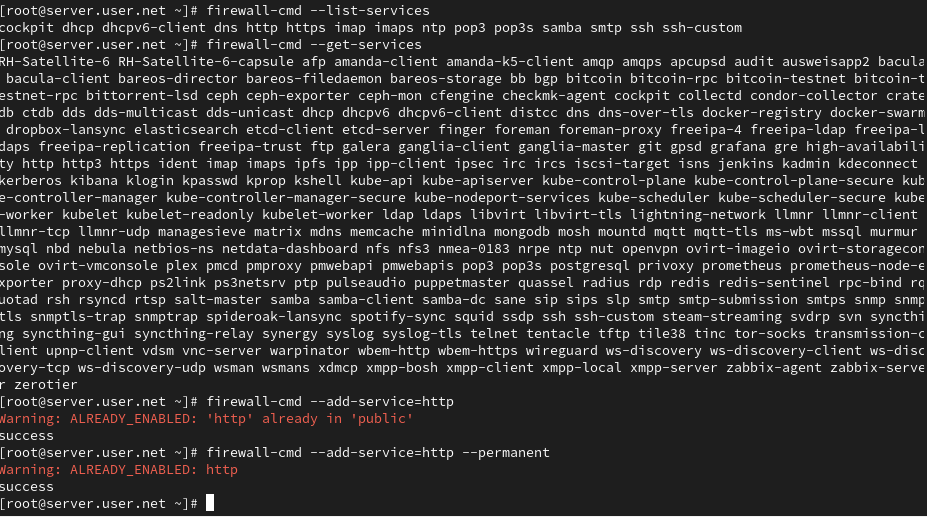
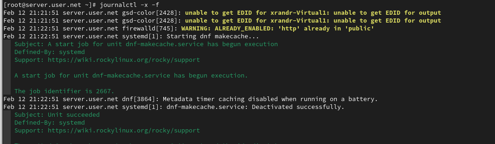
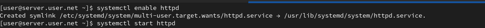
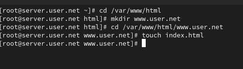
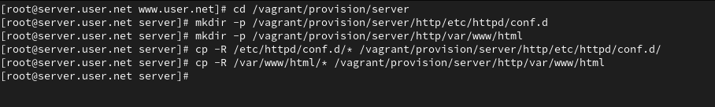

Целью данной работы является приобретение практических навыков по установке и конфигурированию DHCP-сервера.
Загрузим нашу операционную систему и перейдём в рабочий каталог с проектом. Далее запустим виртуальную машину server (рис. @fig-1):

На виртуальной машине server войдём под нашим пользователем и откроем терминал. Перейдём в режим суперпользователя и установим dhcp-server (рис. @fig-2):

Скопируем файл примера конфигурации DHCP dhcpd.conf.example из каталога /usr/share/doc/dhcp* в каталог /etc/dhcp и переименуем его в файл с названием dhcpd.conf (рис. @fig-3):

Откроем файл /etc/dhcp/dhcpd.conf на редактирование. В этом файле заменим строки option domain-name и option domain-name-servers, раскомментируем строку authoritative и на базе одного из приведённых в файле примеров конфигурирования подсети зададим собственную конфигурацию dhcp-сети (рис. @fig-4):

Откроем файл /etc/systemd/system/dhcpd.service на редактирование и заменим в нём строку, указав интерфейс eth1. Затем перезагрузим конфигурацию dhcpd и разрешим загрузку DHCP-сервера при запуске виртуальной машины server (рис. @fig-5):

Добавим запись для DHCP-сервера в конце файла прямой DNS-зоны /var/named/master/fz/user.net и в конце файла обратной зоны /var/named/master/rz/192.168.1. Перезапустим named и проверим, что можно обратиться к DHCP-серверу по имени (рис. @fig-6):
Внесём изменения в настройки межсетевого экрана узла server, разрешив работу с DHCP, и восстановим контекст безопасности в SELinux (рис. @fig-7):

В ходе выполнения лабораторной работы были приобретены практические навыки по установке и конфигурированию DHCP-сервера.
В каких файлах хранятся настройки сетевых
подключений?
В наиболее популярных операционных системах, таких как Windows и Linux,
настройки сетевых подключений хранятся в различных файлах:
За что отвечает протокол DHCP?
Протокол DHCP (Dynamic Host Configuration Protocol) отвечает за
автоматическое присвоение сетевых настроек устройствам в сети, таких как
IP-адреса, маска подсети, шлюз, DNS-серверы и других
параметров.
Поясните принцип работы протокола DHCP. Какими
сообщениями обмениваются клиент и сервер, используя протокол
DHCP?
Принцип работы протокола DHCP:
В каких файлах обычно находятся настройки DHCP-сервера?
За что отвечает каждый из файлов?
Настройки DHCP-сервера обычно хранятся в файлах конфигурации, таких
как:
Что такое DDNS? Для чего применяется DDNS?
DDNS (Dynamic Domain Name System) - это система динамического доменного
имени. Она используется для автоматического обновления записей DNS,
когда IP-адрес узла изменяется. DDNS применяется, например, в домашних
сетях, где IP-адреса часто изменяются посредством DHCP.
Какую информацию можно получить, используя утилиту
ifconfig? Приведите примеры с использованием различных
опций.
Утилита ifconfig используется для получения информации о сетевых
интерфейсах. Примеры:
ifconfig: Показывает информацию обо всех активных
сетевых интерфейсах.ifconfig eth0: Показывает информацию о конкретном
интерфейсе (в данном случае, eth0).Какую информацию можно получить, используя утилиту ping?
Приведите примеры с использованием различных опций.
Утилита ping используется для проверки доступности узла в сети.
Примеры:
ping google.com: Пингует домен google.com.ping -c 4 192.168.1.1: Пингует IP-адрес 192.168.1.1 и
отправляет 4 эхо-запроса.